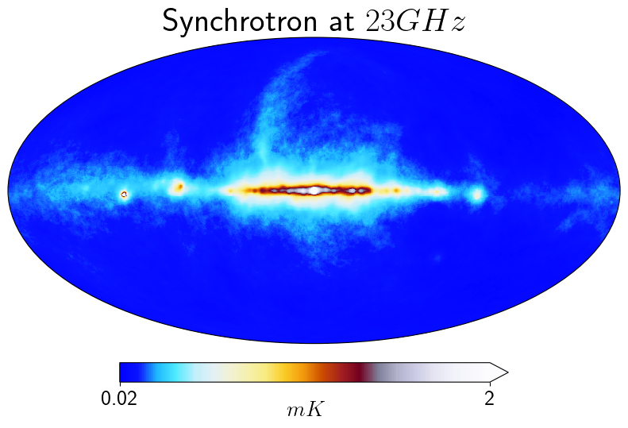
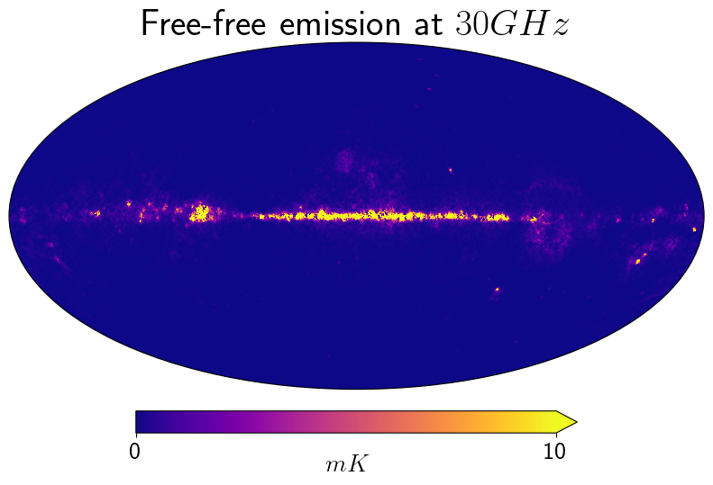
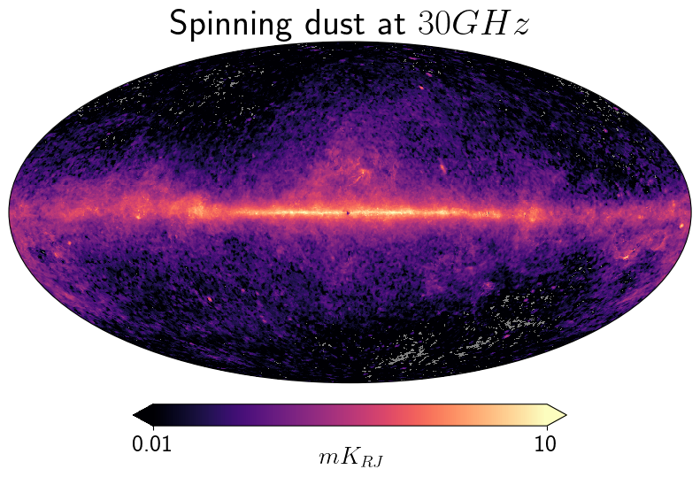
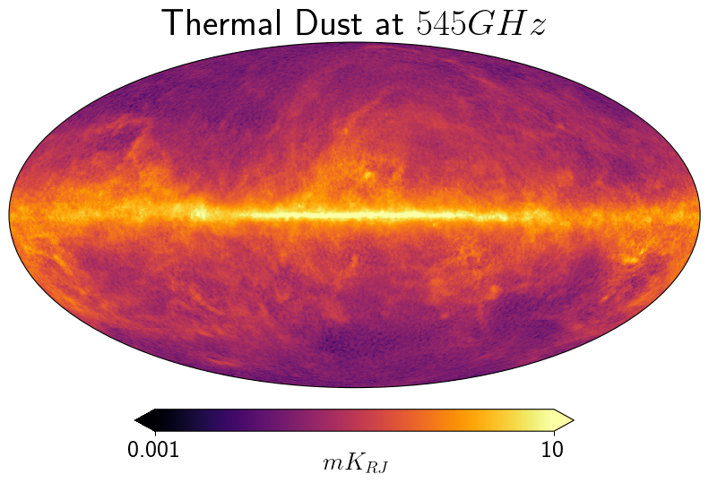
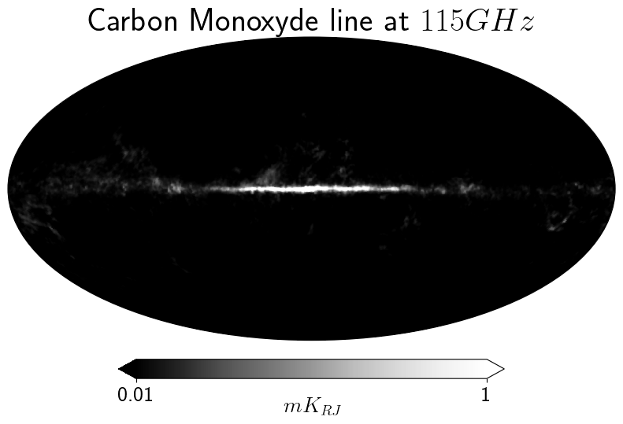
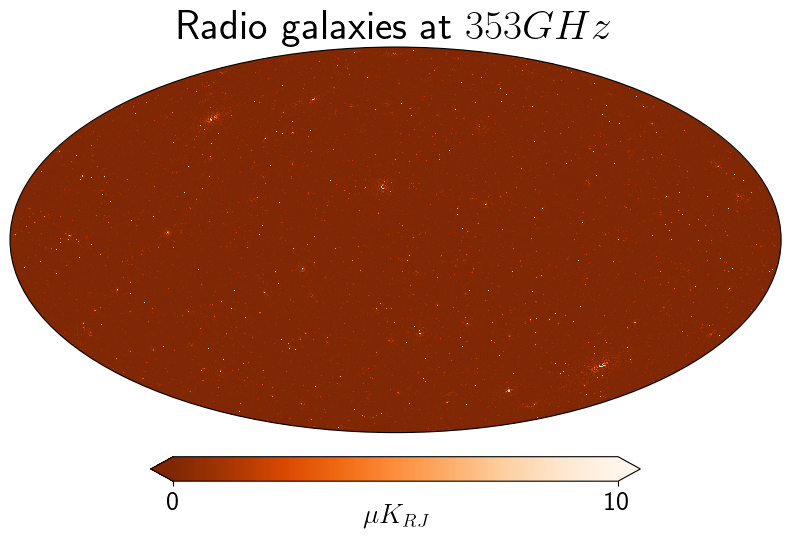
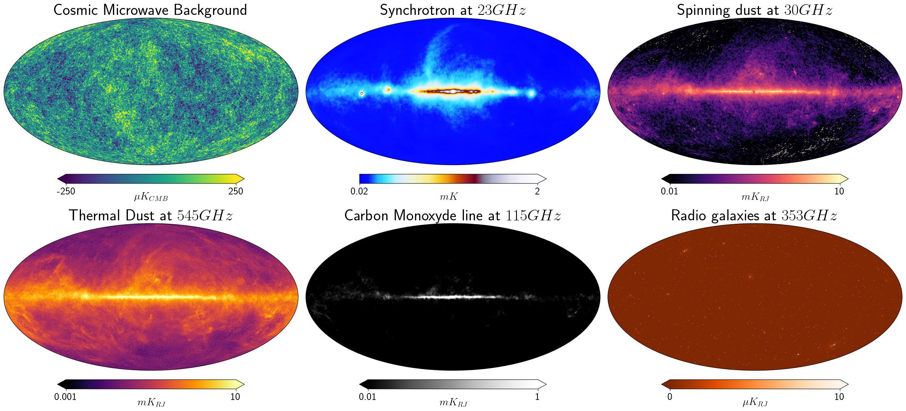

# Install Latex to render labels
!apt install texlive texlive-latex-extra texlive-fonts-recommended cm-super-minimal dvipngGenerate figures for PySM
This notebook generates some figures of Galactic and Extra-Galactic emissions using PySM. Mostly for displaying purposes.
This notebook is designed to work on Google Colab, remove the apt lines if executing locally but make sure you have a Latex environment.
%pip install pysm3import pysm3
from pysm3 import units as u
import healpy as hpsky = pysm3.Sky(nside=128, preset_strings=["c3"], output_unit=u.uK_CMB)cmb = sky.get_emission(100 * u.GHz)import matplotlib.pyplot as plt
plt.rcParams['text.usetex'] = Truefontsize={"title":30, "cbar_label":20, "cbar_tick_label":20}hp.projview(cmb[0].value, min=-250, max=250,
fontsize=fontsize,
unit=r'$\mu K_{CMB}$', title="Cosmic Microwave Background");
plt.savefig("1.jpg", bbox_inches="tight")
sky = pysm3.Sky(nside=256, preset_strings=["s5"], output_unit=u.mK_RJ)
sync = sky.get_emission(23 * u.GHz)[0]hp.projview(sync.value, min=0.02, max=2,
fontsize=fontsize, norm="symlog2", cmap="planck_log",
unit=r'$mK$', title=r"Synchrotron at $23 GHz$");
plt.savefig("2.jpg", bbox_inches="tight")
sky = pysm3.Sky(nside=256, preset_strings=["f1"], output_unit=u.mK_RJ)
freefree = sky.get_emission(30 * u.GHz)[0]freefree.min(), freefree.max()(<Quantity 1.9947761e-07 mK_RJ>, <Quantity 212.05362 mK_RJ>)hp.projview(freefree.value, min=0, max=10,
fontsize=fontsize,
#norm="hist",
cmap = "plasma",
#norm="symlog2", cmap="planck_log",
unit=r'$mK$', title=r"Free-free emission at $30 GHz$");
sky = pysm3.Sky(nside=256, preset_strings=["a1"], output_unit=u.mK_RJ)
ame = sky.get_emission(30 * u.GHz)[0]hp.projview(ame.value, min=0.01, max=10,
fontsize=fontsize,
norm="log",
cmap = "magma",
#norm="symlog2", cmap="planck_log",
unit=r'$mK_{RJ}$', title=r"Spinning dust at $30 GHz$");
plt.savefig("3.jpg", bbox_inches="tight")
sky = pysm3.Sky(nside=256, preset_strings=["d10"], output_unit=u.mK_RJ)
dust = sky.get_emission(545 * u.GHz)[0]dust.value.min()0.03938505hp.projview(dust.value-dust.value.min(), min=0.001, max=10,
fontsize=fontsize,
norm="log",
cmap = "inferno",
#norm="symlog2", cmap="planck_log",
unit=r'$mK_{RJ}$', title=r"Thermal Dust at $545 GHz$");
plt.savefig("4.jpg", bbox_inches="tight")
sky = pysm3.Sky(nside=256, preset_strings=["co1"], output_unit=u.mK_RJ)
co = sky.get_emission(sky.components[0].line_frequency['10'])[0]c=sky.components[0]c.line_frequency{'10': <Quantity 115.271 GHz>,
'21': <Quantity 230.538 GHz>,
'32': <Quantity 345.796 GHz>}hp.projview(co.value, min=0.01, max=1,
fontsize=fontsize,
#norm="log",
cmap = "Greys_r",
#norm="symlog2", cmap="planck_log",
unit=r'$mK_{RJ}$', title=r"Carbon Monoxyde line at $115 GHz$");
plt.savefig("5.jpg", bbox_inches="tight")
sky = pysm3.Sky(nside=2048, preset_strings=["rg1"], output_unit=u.uK_RJ)
rg = sky.get_emission(353*u.GHz)[0]pysm3.apply_smoothing_and_coord_transform?rg_smoothed = pysm3.apply_smoothing_and_coord_transform(rg, output_nside=256,
fwhm=3 * u.arcmin)hp.projview(rg_smoothed.value, min=0, max=10,
fontsize=fontsize,
#norm="log",
cmap = "Oranges_r",
#norm="symlog2", cmap="planck_log",
unit=r'$\mu K_{RJ}$', title=r"Radio galaxies at $353 GHz$");
plt.savefig("6.jpg", bbox_inches="tight")
!apt install imagemagickReading package lists... Done
Building dependency tree... Done
Reading state information... Done
imagemagick is already the newest version (8:6.9.11.60+dfsg-1.3ubuntu0.22.04.3).
0 upgraded, 0 newly installed, 0 to remove and 45 not upgraded.!rm -f montage.jpg
!montage -geometry -0+0 -size 2000 *.jpg montage.jpgfrom IPython.display import Image
Image(filename='montage.jpg')